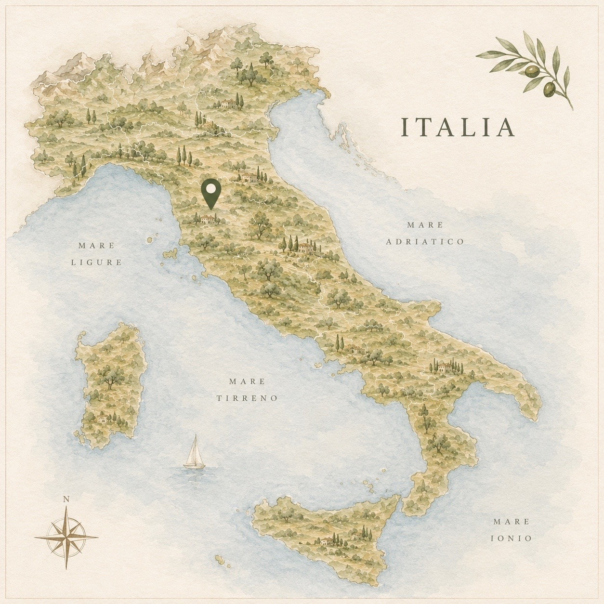

01
Vrijdag 17 september
Aankomst & pizzaparty
15:30
Inchecken
± 19:30
Pizzaparty
17 — 19 september 2027 · Toscane
Drie dagen liefde, warmte en gezelligheid.
Vier het met onsLieve familie & vrienden
Wij kunnen niet wachten om dit bijzondere weekend samen met jullie te beleven — met lange tafels, goede wijn en drie dagen vol liefde.
Floris & Amber
Het weekend
De tijden zijn nog globaal en kunnen veranderen. Dit zijn alvast de belangrijkste momenten.
Vrijdag 17 september
Inchecken
Pizzaparty
Zaterdag 18 september
Ontbijt
Lunch
Voorbereiden voor de ceremonie
Ceremonie
Diner
Feest
Einde feest
Zondag 19 september
Ontbijt
Uitchecken
Onze plek
Drie dagen samen op één plek, tussen de Toscaanse heuvels. Overdag ontspannen bij het zwembad en ’s avonds samen aan lange tafels.
Voor jullie verblijf wordt alles door ons geregeld. Jullie ontvangen voorafgaand aan de bruiloft meer informatie over de accommodatie en de kamerindeling.
Op naar Toscane
De reis naar Italië regel je naar eigen wens. Vlieg je naar Pisa? Dan zorgen wij vanaf een centraal verzamelpunt voor vervoer naar de locatie. Er wordt één transfer geregeld op een vast tijdstip. Meer informatie hierover volgt.

Goed om te weten
Voor jullie verblijf wordt alles door ons geregeld én betaald. Jullie ontvangen voorafgaand aan de bruiloft meer informatie over de accommodatie en de kamerindeling.
De reis regel je zelf. Vanaf Pisa organiseren wij één transfer op een vast tijdstip vanaf een centraal verzamelpunt naar de locatie. De precieze informatie volgt later.
Summer chic. Voor de dames: kleurrijk.
Ondanks dat we dol zijn op jullie kleintjes, hebben we er toch voor gekozen om dit weekend zonder kinderen te vieren.
Geef dieetwensen of allergieën uiterlijk bij de RSVP door. Hiervoor geldt dezelfde deadline als voor de RSVP.
Nog een vraag?
Zodra het programma definitief is, werken we de website bij met de laatste tijden en informatie.
Nee. Voor jullie verblijf tijdens het trouwweekend wordt alles door ons geregeld en betaald.
Ja. Er komt één transfer op een vast tijdstip vanaf een centraal verzamelpunt bij Pisa. De precieze informatie volgt later.
We hopen dat je erbij bent
Laat ons weten of je het weekend met ons in Toscane komt vieren.
De definitieve RSVP-deadline en manier van aanmelden volgen nog.